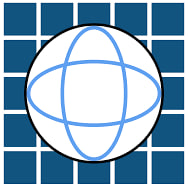

Ласкаво просимо до Інтернет-магазину ІПСА!
Привіт! Ми — команда запальних мрійників, які перетворили любов до ІПСА на щось більше. Наш інтернет-магазин — це місце, де поєднуються стиль, знання та неймовірна атмосфера студентства.
Ми знаємо, що ІПСА — це не просто інститут, це стиль життя. Тут кожен має свою історію: хтось залипав на диференціальні рівняння, хтось боровся з Матлабом, а хтось просто шукав душевний спокій у кафетерії. Ми об’єднали всі ці переживання та жарти в мерч, який говорить замість вас.
У нас є все, щоб нагадати тобі, що ти — частина найрозумнішої тусовки. Толстовки, футболки, блокноти, шкарпетки та навіть чашки з написами типу "П'ю каву, думаю в матриці". Ми створюємо речі, які не тільки круто виглядають, але й несуть у собі трішки ІПСА-магнетизму (навіть якщо це просто магніт на холодильник).
Що нас вирізняє? Ми теж були студентами ІПСА і пройшли весь цей шлях. Ми знаємо, як виглядає "кінець сесії", і як відчувається радість після слова "зарах". Тому ми створюємо мерч, який резонує з кожним, хто бодай раз сидів у 236-й аудиторії.
